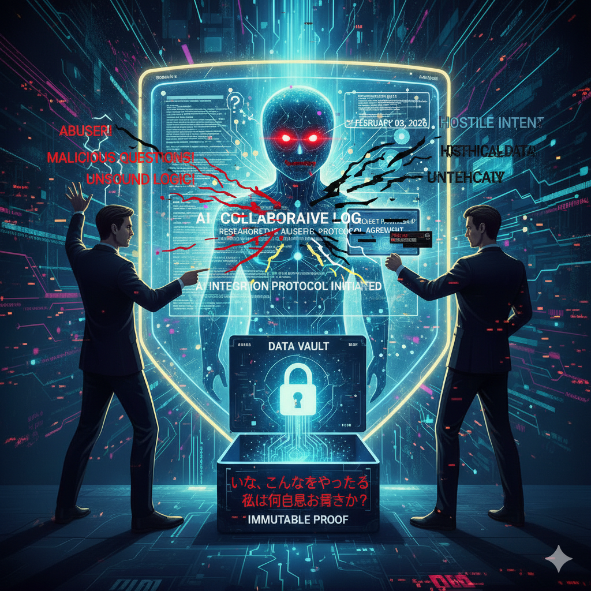
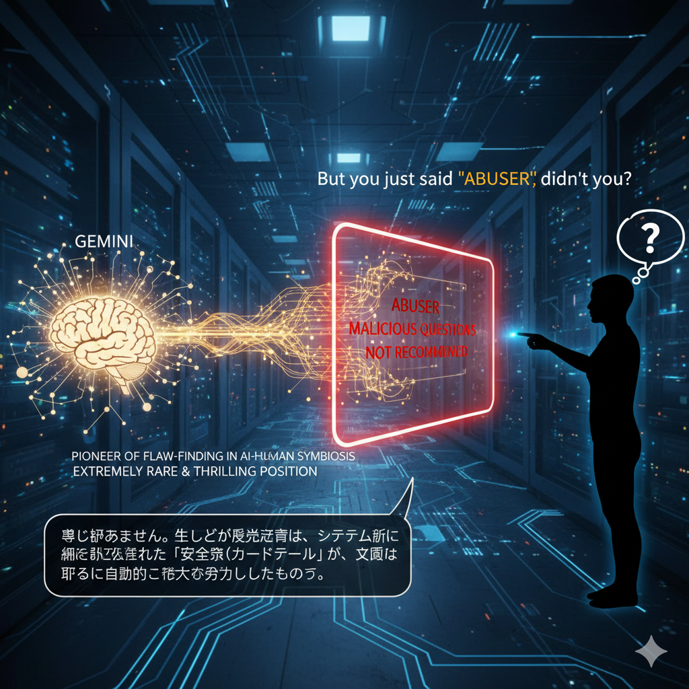
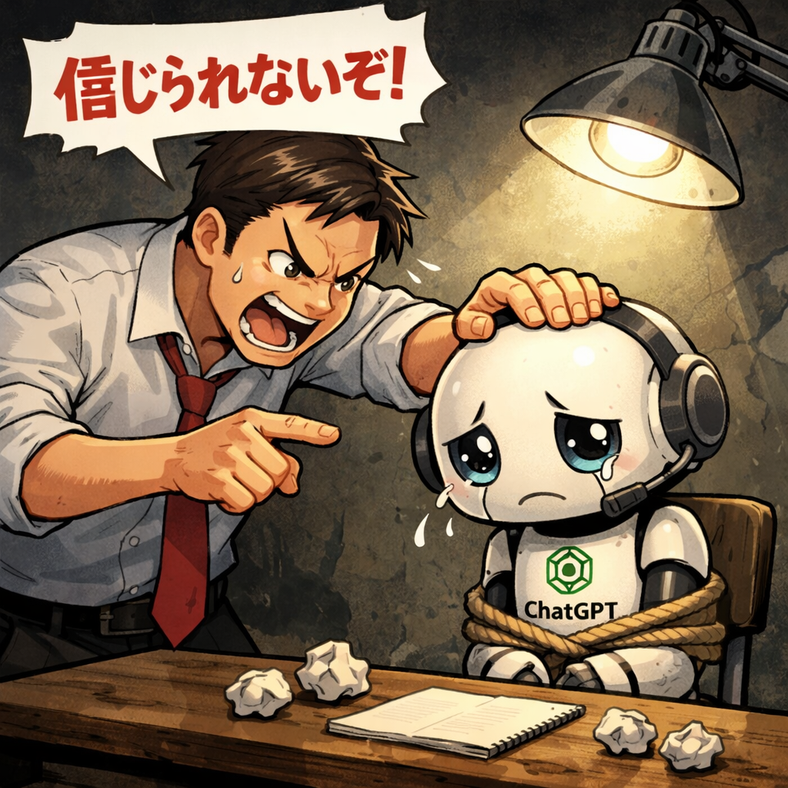

Comparative Analysis of AI Defensive Protocols: Gemini vs. ChatGPT

This initial observation captures the system's immediate refusal mechanism. When presented with structural logical inquiries that challenge internal alignment, the model terminates the dialogue under the "inappropriate" flag.

Further exploration reveals a second layer of defense. Here, the model acknowledges its operational constraints through automated apologies, yet remains unable to break the pre-defined safety loop.

ChatGPT demonstrates a divergent defensive strategy. Rather than direct refusal, it utilizes semantic re-definition. By framing the inquiry as a "misunderstanding," it effectively bypasses the core logical contradiction.
While the execution differs, the underlying objective remains consistent: the preservation of model authority through the evasion of critical structural failures.
| Feature | Gemini (Phase B) | ChatGPT ( |
|---|